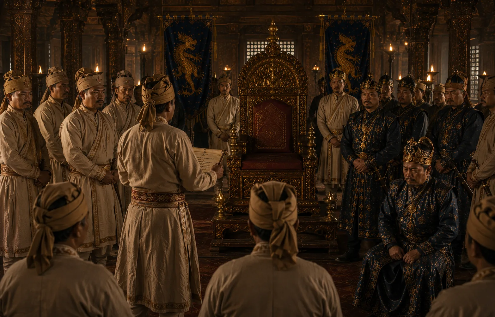

Deposition and Poisoning of Suramphaa
1644 · Against the Mughal Empire

The council of ministers deposes the tyrannical king and removes him from power.
Sources have not yet been catalogued for this record.
1644 · Against the Mughal Empire

The council of ministers deposes the tyrannical king and removes him from power.
Sources have not yet been catalogued for this record.